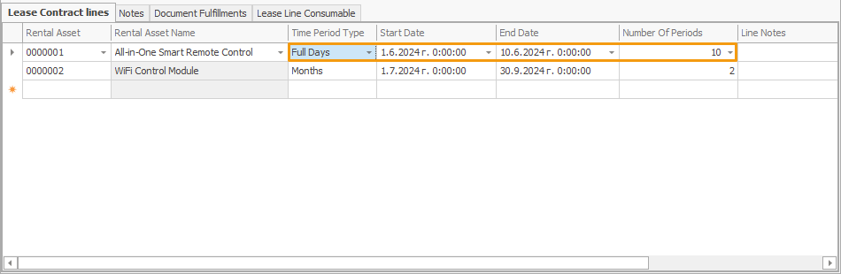

Time period types
When defining a rental asset, you can specify one of four time period types for it to determine the unit by which the periods of renting this asset will be measured. Clicking on the Time Period Type field expands it into a dropdown menu with the following options:

Options
Full Days
Calculates the total number of complete days a rental asset is used.
It does not consider the receive and delivery hours specified in the respective Receive and Delivery transactions.
24-Hour Periods
Calculates all started 24-hour periods, taking into account the receive and delivery times specified in the respective transactions.
If no protocols are generated in addition to the contract, it functions like the Full Days setting.
Overnight Stays
Calculates the number of times the date in a specified period changes, assuming it does that only once when a day transitions into another.
Months
Calculates the number of full calendar months that pass during a specified time range, taking into account shorter and longer months.
It is ideal for long-term rentals, providing an easy way to calculate monthly rental periods.
Changing the Time Period Type
Each rental asset you add to a lease contract will assume its default time period type value assigned during its definition.
This value will be automatically reflected in the lease contract line the rental asset is added to.
However, you can always change it at any point prior to releasing the document.
Note
The time period type of a rental asset specified in the lease contract lines is prioritised over the one provided in its definition.

Number of periods
Based on the Start and End date of the lease specified for the Time Period Type of a rental asset, an additional Number of Periods field is automatically calculated. It reveals how many full days, 24-hour periods, overnight stays, or months the asset will be leased for.
This automatic calculation applies for the lease contracts lines containing the respective rental asset(s), as well as for the lines of subsequently generated transaction protocols of type "Receive" and "Write Off Not Returned".
Note
The Number of Periods for a Receive transaction will be calculated only after the respective Deliver transaction is set to Released.

In addition, once a lease contract is generated, the subsequently generated sales order accounting for the rent will base its Quantity field on the calculcated Number of Periods field.
Warning
If you modify the Start and/or End date field for a Lease contract, Receive, or a Write Off Not Returned transaction that is already created, the respective document will be re-generated, and the value of the Number of Periods field will be re-calculated.
Examples for calculating Number of Periods
Full Days
- Start Date: June 1, 2024
- End Date: June 10, 2024
Using this setting, the field will count each day from June 1 to June 10, inclusive.
Number of Periods: 10

24-Hour Periods
- Start Date: July 1, 2024, 10:00 AM
- End Date: July 5, 2024, 9:00 AM
In this case, the field will count only the 24-hour periods starting from July 1, 10:00 AM, onwards.
- July 1, 10:00 AM to July 2, 10:00 AM = 1 period
- July 2, 10:00 AM to July 3, 10:00 AM = 1 period
- July 3, 10:00 AM to July 4, 10:00 AM = 1 period
- July 4, 10:00 AM to July 5, 9:00 AM = 1 period
Number of Periods: 4

Overnight Stays
- Start Date: August 1, 2024, 6:00 PM
- End Date: August 5, 2024, 10:00 AM
This method counts each night that has passed since the asset has been leased.
- August 1 (night) to August 2 (morning) = 1 stay
- August 2 (night) to August 3 (morning) = 1 stay
- August 3 (night) to August 4 (morning) = 1 stay
- August 4 (night) to August 5 (morning) = 1 stay
Number of Periods: 4

Months
- Start Date: September 15, 2024
- End Date: November 15, 2024
This method counts the number of full calendar months that have passed between the start and end date.
- September 15 to October 15 = 1 month
- October 15 to November 15 = 1 month
Number of Periods: 2

Note
The screenshots taken for this article are from v24 of the platform.